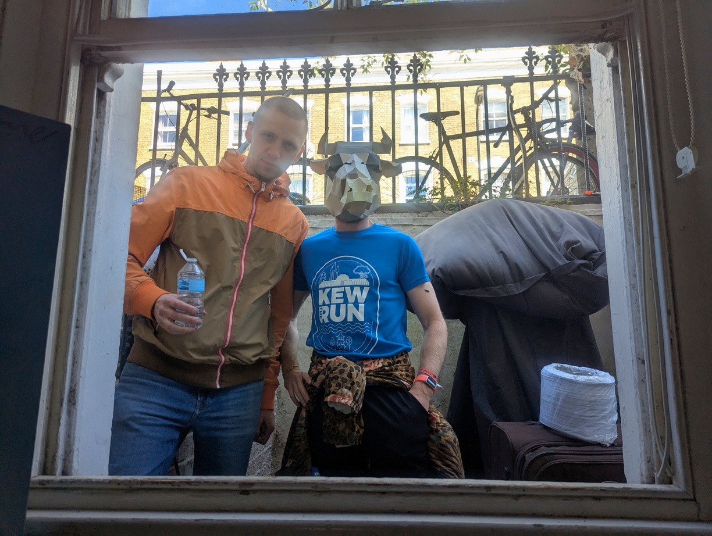

MOOWS / Issue 01 · August 2026
How I Defeated Putin So My Mom Could Continue Asking When I’ll Get a Real Job
I built a VPN for my parents so they could keep explaining why quitting my job was a terrible idea.
Not sure this was the best use of my unemployment, but here's how you can do the same.
Works for current authoritarian regimes. Future compatibility not guaranteed.
1. Decide you actually want to talk to your parents.
The hardest step.
Everything after this is just computers.
2. Try simply calling them.
Try every messaging app you have on your phone—WhatsApp, Telegram, Viber, imo.
Does it work?
Great. Stop reading and go talk to your parents.
If not, spend five minutes making sure your parents didn't accidentally mute themselves.
Congratulations. You've just discovered it's not an app problem.
3. Blame Putin.
Because this time it's actually him.
Russia has been throttling foreign messaging apps while pushing everyone toward its own alternative, MAX. Apparently the FSB wants to know if you're unemployed or not.
Your family chat is now a geopolitical issue.
4. Realize you're unemployed and proficient in IT.
A dangerous combination.
Most people would just pay to solve the problem, but not you.
5. Research. Time to invent a bicycle.
Read Habr. Someone has already solved your problem. The answer is a VPN.
Learn just enough about VPNs to sound smart.
Instead of talking directly to Telegram, your traffic first goes through a server you control.
To your ISP, it looks like you're only talking to that server.
Simple? Yes, to someone.
6. Discover your parents already use a VPN.
Honestly, this was the most surprising part.
My parents were bypassing state censorship before I got involved.
Love finds a way.
7. Learn that Putin also hates VPNs.
Commercial VPN providers share IP addresses, which makes them easy to block.
Providers rotate IPs. Governments block them again. Repeat forever.
8. Do what every programmer eventually does.
"I'll just run my own." At this point, the project is no longer about your parents.
It's about your ego.
9. Find AmneziaVPN.
Habr recommends AmneziaVPN as a free, self-hosted solution that works in one click.
Of course, every "one-click" solution comes with prerequisites.
In this case, you need your own server.
After all, can you really call yourself an IT geek if you don't have one?
10. Rent a €3 server on FreakHosting.
Courtesy of another internet stranger's recommendation.
Within minutes you have a server, a dedicated IP address, and more confidence than experience.
11. Click "Install."
About a minute later, your VPN is running.
It generates a QR code for connecting, so you don't even have to remember a password.
Technology is ridiculous these days.
12. Test it on your brother.
If it breaks, he'll survive.
He scans the QR code.
Telegram works instantly.
Excellent.
13. Send it to your parents.
Same QR code.
Same two minutes.
Suddenly everyone can hear everyone again.
Including your mother asking whether you've found a proper job yet.
Mission accomplished.
Sometimes real pride isn't finishing a complex tech project — it's creating one that lets the people who love you annoy you in real time.
P.S. I'm not affiliated with Habr, AmneziaVPN, or FreakHosting. They just happened to solve my problem.
P.P.S. My school teacher always said I write like a chicken. This text merely proves that chickens can write. [Editor: “with the help of AI”]
